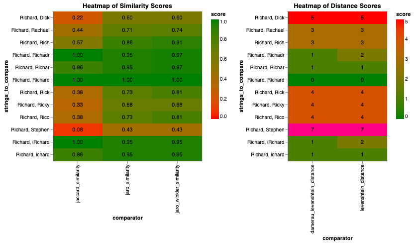
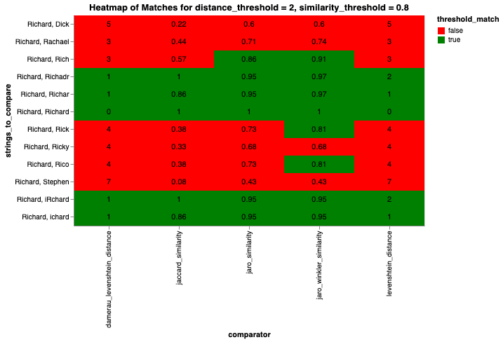
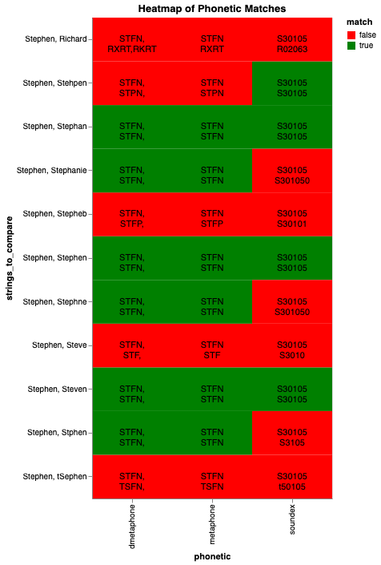

Choosing String Comparators¶
When building a Splink model, one of the most important aspects is defining the Comparisons and Comparison Levels that the model will train on. Each Comparison Level within a Comparison should contain a different amount of evidence that two records are a match, which the model can assign a Match Weight to. When considering different amounts of evidence for the model, it is helpful to explore fuzzy matching as a way of distinguishing strings that are similar, but not the same, as one another.
This guide is intended to show how Splink's string comparators perform in different situations in order to help choosing the most appropriate comparator for a given column as well as the most appropriate threshold (or thresholds). For descriptions and examples of each string comparators available in Splink, see the dedicated topic guide.
What options are available when comparing strings?¶
There are three main classes of string comparator that are considered within Splink:
- String Similarity Scores
- String Distance Scores
- Phonetic Matching
where
String Similarity Scores are scores between 0 and 1 indicating how similar two strings are. 0 represents two completely dissimilar strings and 1 represents identical strings. E.g. Jaro-Winkler Similarity.
String Distance Scores are integer distances, counting the number of operations to convert one string into another. A lower string distance indicates more similar strings. E.g. Levenshtein Distance.
Phonetic Matching is whether two strings are phonetically similar. The two strings are passed through a phonetic transformation algorithm and then the resulting phonetic codes are matched. E.g. Double Metaphone.
Comparing String Similarity and Distance Scores¶
Splink contains a comparison_helpers module which includes some helper functions for comparing the string similarity and distance scores that can help when choosing the most appropriate fuzzy matching function.
For comparing two strings the comparator_score function returns the scores for all of the available comparators. E.g. consider a simple inversion "Richard" vs "iRchard":
import splink.comparison_helpers as ch
ch.comparator_score("Richard", "iRchard")
Now consider a collection of common variations of the name "Richard" - which comparators will consider these variations as sufficiently similar to "Richard"?
import pandas as pd
data = {
"string1": [
"Richard",
"Richard",
"Richard",
"Richard",
"Richard",
"Richard",
"Richard",
"Richard",
"Richard",
"Richard",
"Richard",
"Richard",
],
"string2": [
"Richard",
"ichard",
"Richar",
"iRchard",
"Richadr",
"Rich",
"Rick",
"Ricky",
"Dick",
"Rico",
"Rachael",
"Stephen",
],
"error_type": [
"None",
"Deletion",
"Deletion",
"Transposition",
"Transposition",
"Shortening",
"Nickname/Alias",
"Nickname/Alias",
"Nickname/Alias",
"Nickname/Alias",
"Different Name",
"Different Name",
],
}
df = pd.DataFrame(data)
df
The comparator_score_chart function allows you to compare two lists of strings and how similar the elements are according to the available string similarity and distance metrics.
ch.comparator_score_chart(data, "string1", "string2")

Here we can see that all of the metrics are fairly sensitive to transcriptions errors ("Richadr", "Richar", "iRchard"). However, considering nicknames/aliases ("Rick", "Ricky", "Rico"), simple metrics such as Jaccard, Levenshtein and Damerau-Levenshtein tend to be less useful. The same can be said for name shortenings ("Rich"), but to a lesser extent than more complex nicknames. However, even more subtle metrics like Jaro and Jaro-Winkler still struggle to identify less obvious nicknames/aliases such as "Dick".
If you would prefer the underlying dataframe instead of the chart, there is the comparator_score_df function.
ch.comparator_score_df(data, "string1", "string2")
Choosing thresholds¶
We can add distance and similarity thresholds to the comparators to see what strings would be included in a given comparison level:
ch.comparator_score_threshold_chart(
data, "string1", "string2", distance_threshold=2, similarity_threshold=0.8
)

To class our variations on "Richard" in the same Comparison Level, a good choice of metric could be Jaro-Winkler with a threshold of 0.8. Lowering the threshold any more could increase the chances for false positives.
For example, consider a single Jaro-Winkler Comparison Level threshold of 0.7 would lead to "Rachael" being considered as providing the same amount evidence for a record matching as "iRchard".
An alternative way around this is to construct a Comparison with multiple levels, each corresponding to a different threshold of Jaro-Winkler similarity. For example, below we construct a Comparison using the Comparison Library function jaro_winkler_at_thresholds with multiple levels for different match thresholds.:
import splink.duckdb.duckdb_comparison_library as cl
first_name_comparison = cl.jaro_winkler_at_thresholds("first_name", [0.9, 0.8, 0.7])
If we print this comparison as a dictionary we can see the underlying SQL.
first_name_comparison.as_dict()
Where:
- Exact Match level will catch perfect matches ("Richard").
- The 0.9 threshold will catch Shortenings and Typos ("ichard", "Richar", "iRchard", "Richadr", "Rich").
- The 0.8 threshold will catch simple Nicknames/Aliases ("Rick", "Rico").
- The 0.7 threshold will catch more complex Nicknames/Aliases ("Ricky"), but will also include less relevant names (e.g. "Rachael"). However, this should not be a concern as the model should give less predictive power (i.e. Match Weight) to this level of evidence.
- All other comparisons will end up in the "Else" level
Phonetic Matching¶
There are similar functions available within splink to help users get familiar with phonetic transformations. You can create similar visualisations to string comparators.
To see the phonetic transformations for a single string, there is the phonetic_transform function:
import splink.comparison_helpers
ch.phonetic_transform("Richard")
ch.phonetic_transform("Steven")
Now consider a collection of common variations of the name "Stephen". Which phonetic transforms will consider these as sufficiently similar to "Stephen"?
data = {
"string1": [
"Stephen",
"Stephen",
"Stephen",
"Stephen",
"Stephen",
"Stephen",
"Stephen",
"Stephen",
"Stephen",
"Stephen",
"Stephen",
],
"string2": [
"Stephen",
"Steven",
"Stephan",
"Steve",
"Stehpen",
"tSephen",
"Stephne",
"Stphen",
"Stepheb",
"Stephanie",
"Richard",
],
"error_type": [
"None",
"Spelling Variation",
"Spelling Variation/Similar Name",
"Nickname/Alias",
"Transposition",
"Transposition",
"Transposition",
"Deletion",
"Replacement",
"Different Name",
"Different Name",
],
}
df = pd.DataFrame(data)
df
The phonetic_match_chart function allows you to compare two lists of strings and how similar the elements are according to the available string similarity and distance metrics.
ch.phonetic_match_chart(data, "string1", "string2")

Here we can see that all of the algorithms recognise simple phonetically similar names ("Stephen", "Steven"). However, there is some variation when it comes to transposition errors ("Stehpen", "Stephne") with soundex and metaphone-esque giving different results. There is also different behaviour considering different names ("Stephanie").
Given there is no clear winner that captures all of the similar names, it is recommended that phonetic matches are used as a single Comparison Level within in a Comparison which also includes string comparators in the other levels. To see an example of this, see the Combining String scores and Phonetic matching section of this topic guide.
If you would prefer the underlying dataframe instead of the chart, there is the phonetic_transform_df function.
ch.phonetic_transform_df(data, "string1", "string2")
Combining String scores and Phonetic matching¶
Once you have considered all of the string comparators and phonetic transforms for a given column, you may decide that you would like to have multiple comparison levels including a combination of options.
For this you can construct a custom comparison to catch all of the edge cases you want. For example, if you decide that the comparison for first_name in the model should consider:
- A
Dmetaphonelevel for phonetic similarity - A
Levenshteinlevel with distance of 2 for typos - A
Jaro-Winklerlevel with similarity 0.8 for fuzzy matching
The name_comparison function from the Comparison Template Library can be configured as follows:
import splink.duckdb.duckdb_comparison_template_library as ctl
first_name_comparison = ctl.name_comparison(
"first_name",
phonetic_col_name="first_name_dm",
damerau_levenshtein_thresholds=[],
levenshtein_thresholds=[2],
jaro_winkler_thresholds=[0.8],
)
first_name_comparison.as_dict()
where first_name_dm refers to a column in the dataset which has been created during the feature engineering step to give the Dmetaphone transform of first_name.